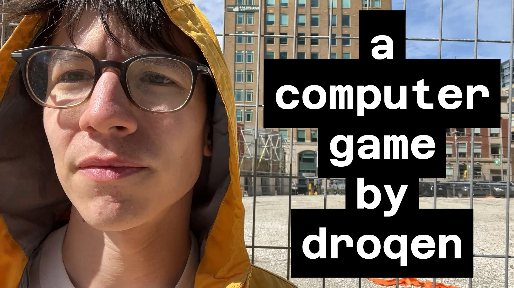
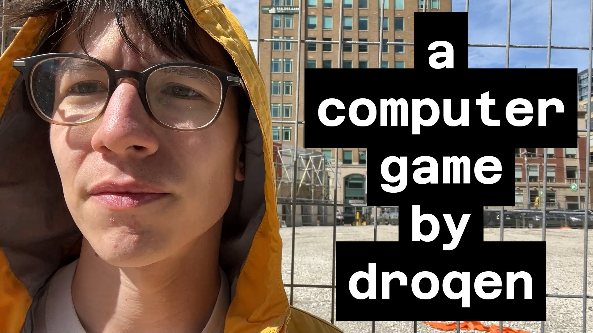

my new game "The End of Gameplay" is releasing on Steam when the flower moon is full. (May 12, ~12:56PM EST) (around noon, don't mix up AM/PM like i do, haha) - i think of it like a poetry anthology of games, or levels; each one is on a subject and conveys a strong emotion, and together they have a collective effect, too. - it has gameplay, but it is also an exploration of some inherent badness of gameplay, which i have felt for years but only properly identified sometime in the past year when i started saying the magical phrase "kill gameplay." - structurally it presents the player with a list of levels to play in any order, freely, like an open book. some people like to skip around and others play in order. i like that it allows players to choose how they engage, and it makes it transparent how to explore and how to revisit. - there is poetry and music and pixel art compositions and a weird character controller. (at least one.) - some of the levels, i'm told, are beautiful, and do good work conveying emotions through gameplay! here is the trailer: here are some quotes from people who have been affected by The End of Gameplay
"it's really beautiful and polished and intentional. The levels are really nice to look at, like the craftsmanship is really really high and it is a beautiful thing . . . Imagine you make pottery and mugs for a living and then one day you make a mug that is all handles just to show off that you can."
"I'm in complete awe of what you have achieved here, I honestly don't know how you did it or how making something like this can be done. I'm confused, moved, inspired and made uncomfortable at the same time. . . . It gave me lots of new ideas and new feelings about games, about art."
here are some links: - The End of Gameplay on Steam - The End of Gameplay Trailer - YouTube - droqen: "kill gameplay" — Bluesky - droqen's "kill gameplay" rant @ bonus stage (jan 2025) - YouTube
here are some images of the game:
here are some artworks that i made for capsule images (but only one was used):


here is a poem that i read at a Dirty Rectangles in Toronto, before presenting the game:
if gameplay dies and makes its way home
to where does gameplay go?
living or dead where gameplay's soul flies
to sages in caves, to gardens and wells,
to bottomless oceans clipped blue,
there like a white-winged bird returning
home where it knows to go
to the last checkpoint gameplay touched:
i want to to know where do you go when you die!
does gameplay have save slots
like a stranger a child on the bus alone
gameplay safe in gameplay's world
wrapped up in itself left right
am i gameplay?
mortal if gameplay is mortal
even touched by the pen of death
whose inkwell is wet
still from writing all those names
in the wastelands far away
in the hospitals i know
in caves
will gameplay's pen write my name when i die?
here is my email address if you have any questions: droqen@gmail.com thanks for reading. love, droqen